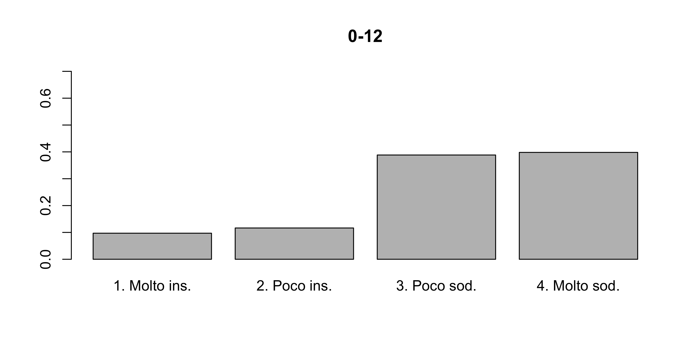
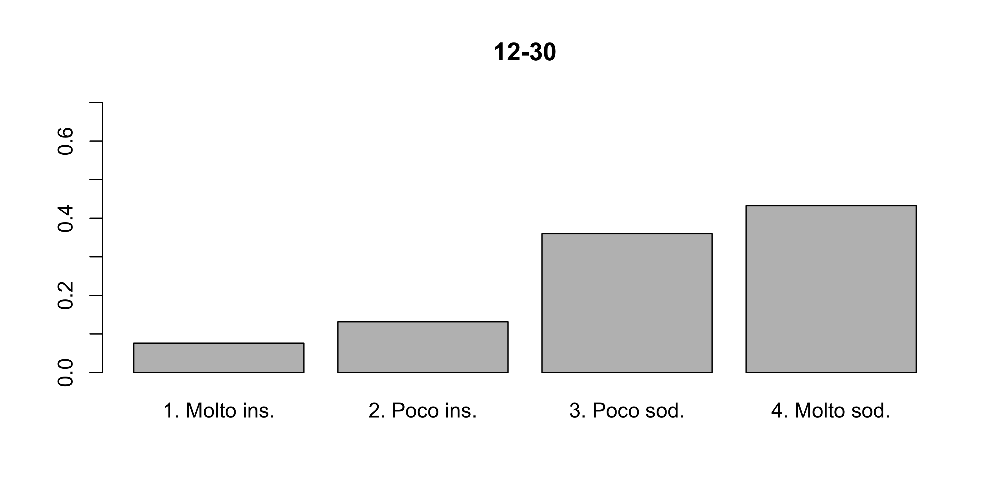
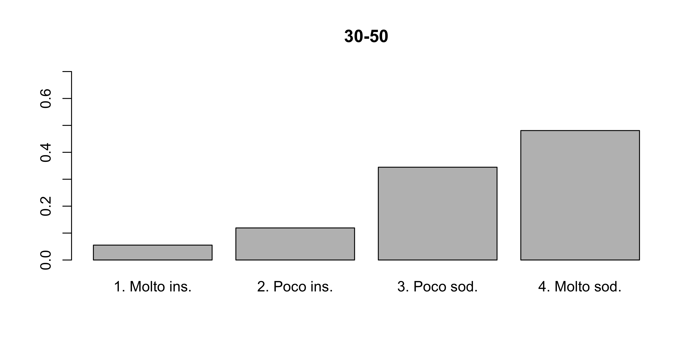
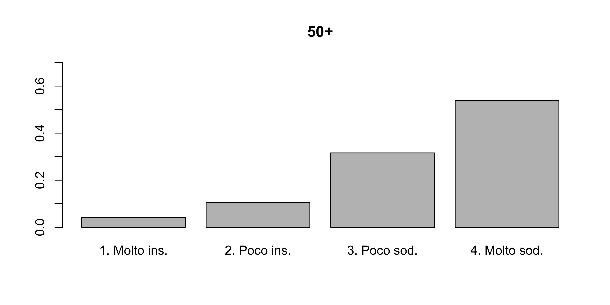

Esercizi 7: tabelle di contingenza
Alcune delle seguenti soluzioni sono state gentilmente fornite dal tutor di Statistica I dell’A.A. 2021/2022, Alex Alborghetti, che ringrazio. Le soluzioni sono state quindi riviste dal docente, che si assume le responsabilità di eventuali sviste ed errori.
La seguente tabella di contingenza mostra come n = 319 studenti universitari di varie università si distribuiscono sulla base delle due variabili “Tipo di maturità” e “Numero di esami superati durante il primo anno”.
| 0 - 1 | 2 - 5 | 5 + | |
|---|---|---|---|
| Maturità classica | 10 | 67 | 31 |
| Maturità scientifica | 4 | 52 | 36 |
| Altre | 14 | 65 | 40 |
Analizzare la dipendenza (in distribuzione) esistente tra le due variabili con gli strumenti a voi noti.
Un’azienda vuole conoscere se la soddisfazione nel lavoro può essere determinata anche dallo stipendio del dipendente. A questo scopo ha intervistato tutti i suoi dipendenti e li ha classificati in base al reddito, come riportato nella tabella seguente.
| Molto insoddisfatto | Poco insoddisfatto | Poco soddisfatto | Molto soddisfatto | |
|---|---|---|---|---|
| 0 - 12 | 20 | 24 | 80 | 82 |
| 12 - 30 | 22 | 38 | 104 | 125 |
| 30 - 50 | 13 | 28 | 81 | 113 |
| 50+ | 7 | 18 | 54 | 92 |
Attraverso un opportuno indice statistico si dica se esiste una dipendenza in distribuzione tra le due variabili.
Si illustri le distribuzioni condizionate della variabile soddisfazione dato il reddito.
Al crescere dello stipendio aumenta la soddisfazione?
Nella tabella seguente è riportato il tipo di allattamento e la presenza o meno di difetti nella dentatura del neonato.
| Denti normali | Malocclusione | |
|---|---|---|
| Allattamento naturale | 4 | 16 |
| Allattamento artificiale | 1 | 21 |
Si dica attraverso un opportuno indice statistico appropriato se vi è associazione tra le due variabili rilevate.
Si può inoltre affermare che il tipo di allattamento provoca difetti nella dentatura dei neonati?
Nella tabella che segue sono riportare le frequenze congiunte percentuali del numero di telefoni cellulari presenti in Italia a seconda delle diverse aree geografiche e di due fornitori. Si sa inoltre che il numero di clienti TIM è il 50\% più alto di quelli di Vodafone e che i clienti di TIM sono 9 milioni.
| Nord | Centro | Sud | |
|---|---|---|---|
| TIM | 25.2 | ? | 16.8 |
| Vodafone | ? | 12 | 9.2 |
Completare la tabella.
Al di là dei valori assoluti, quale delle due compagnie ha maggiore capacità di penetrazione commerciale al nord?
C’è associazione tra le due variabili?